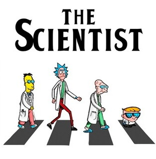
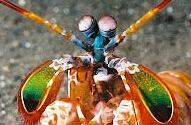

Fatos Sobre o Stomatopoda
Classificação científica
-

- Odontodactylus scyllarus
- Reino: Animalia
- Filo: Arthropoda
- Subfilo: Crustacea
- Classe: Malacostraca
- Subclasse: Hoplocarida
- Ordem: Stomotopoda
Seus olhos
Enquanto um cachorro pode perceber apenas tonalidades de verde e azul e nós humanos podemos ver todo o espectro RGB, o Stomatopoda tem um espectro de cores com 16 TONALIDADES DIFERENTES, possibilitando combinações completamente inimagináveis.
Ele é o ser com a visão mais colorida de todo o reino animal.
Seu famoso SOCO
Mesmo com sua aparência fofa e colorida, esse animal é extremamente agressivo e não se importa de caçar sua própria espécie.
Dentre cerca de 450 espécies de 'Hoplocaridas', o Odontodactylus scyllarus é o que desfere o golpe mais
violento: seu soco chega a 80 quilômetros por hora, aceleração semelhante a uma arma calibre .22. Com uma
pressão resultante de 60 quilos por centímetro quadrado, o bicho consegue facilmente quebrar a carapaça de um
caranguejo, e mesmo que erre a sua presa, apenas a força do impacto de seu soco seria o suficiente para
matá-la. A velocidade é tão rápida que por um momento chega a temperatura do sol (sim do SOL), evaporar a água
e criar pequenos feiches de luz.
ASSUSTADOR